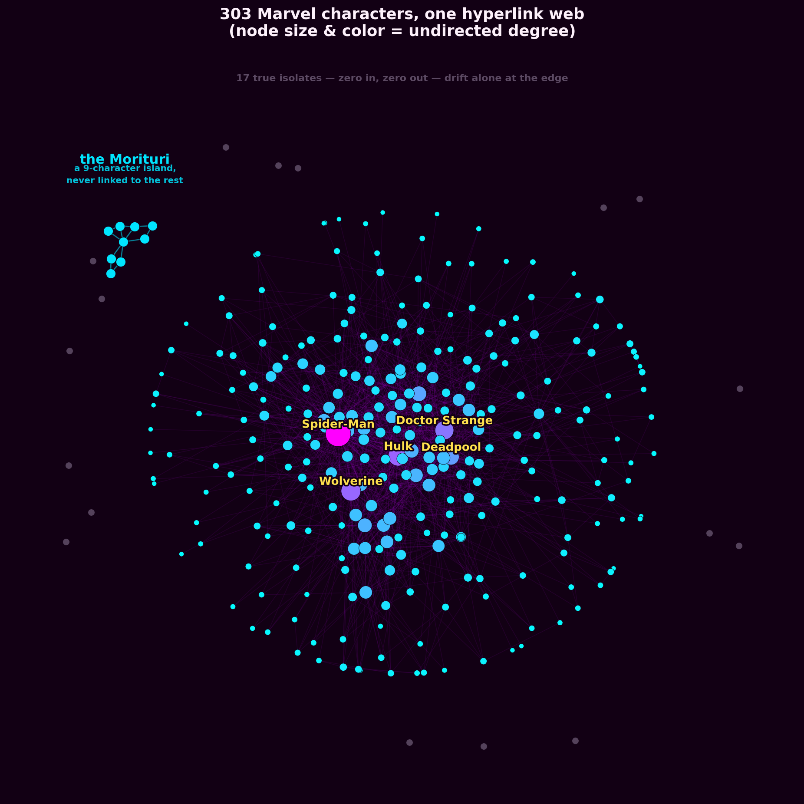
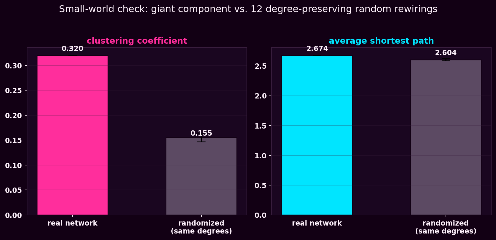
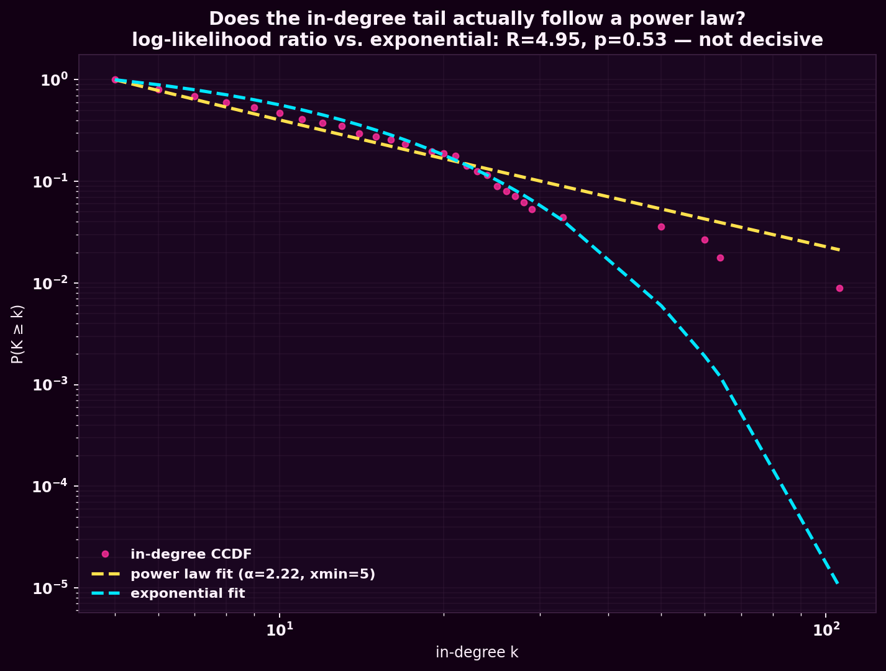

What we asked
The assignment's numbers check out easily enough: load the snapshot, get n = 303 and 1,784 directed edges, collapse to 1,434 undirected pairs, average degree ⟨k⟩ ≈ 9.5. The more interesting questions sit just past those numbers. Who actually holds this network together, and who's just along for the ride? In- and out-degree are supposed to look different because they're generated differently — does that actually show up once you plot it? And "everyone reachable from everyone" is doing a lot of work in that average degree — is that even true, or are there characters sitting entirely outside the story?
What we did
We loaded week1_nodes.tsv and week1_edges.tsv, adding every
node to the graph before the edges, so the 17 characters with no links in
either direction survive as isolated nodes instead of silently disappearing. From the
resulting directed graph we pulled in-degree and out-degree for every character, plotted
both on linear and log–log axes, and overlaid the log-binned curve (width-1 bins
up to k+1=7, doubling after that, each bin's count divided by its width and placed at
the geometric mean of the degrees it covers) so the sparse tail doesn't get lost in noise.
Then we went looking for structure the summary statistics hide: we collapsed the graph to undirected and ran connected components on it, to see whether "the network" is really one thing or several. And because a hairball of 303 circles and 1,434 lines tells you nothing just sitting there, we laid the whole thing out as one image — every character placed by a spring layout, sized and colored by degree, with anything outside the giant component pushed out to where it visually belongs: the edge.

The figure that mattered most
In-degree and out-degree measure genuinely different behaviors, and plotting them side by side on log–log axes makes that obvious in a way the raw numbers don't. In-degree stretches all the way out to Spider-Man at k = 106; out-degree tops out at Betsy Braddock with just 28. That's not a coincidence — an in-link is conferred: some other article's editors, independently, decided this character was worth mentioning. There's no ceiling on how many different pages can point at Spider-Man. An out-link is authored: someone has to sit down and physically write it into one specific page, and any one editor writing any one article eventually stops. One mechanism has no ceiling, the other has a human one — and the tail length of each distribution shows it directly.
Who links to whom in the Marvel superhero web
in-degree (cited by)
out-degree (cites)
Hover (or tap) a dot to see which characters sit at that degree.
| Rank | Top in-degree (cited by) | k | Top out-degree (cites) | k |
|---|---|---|---|---|
| 1 | Spider-Man | 106 | Betsy Braddock | 28 |
| 2 | Hulk | 64 | Cloak and Dagger | 24 |
| 3 | Wolverine | 60 | Adam Warlock | 22 |
| 4 | Doctor Strange | 50 | Venom | 21 |
| 5 | Deadpool | 33 | She-Hulk | 20 |
What surprised us
We expected isolates — the dataset's own header warns you there are 17 of them, lone characters nobody linked and who link to no one. What we didn't expect was a second kind of exile: a fully self-contained cluster of nine characters — Backhand, Blackthorn, Radian, Scaredycat, Scatterbrain, Shear, Snapdragon, Toxyn and Vyking, the Strikeforce: Morituri team — that link densely to each other and to absolutely nobody else in the other 294 characters. Component analysis found it instantly; eyeballing the hairball never would have.
Our read: a team page that only cross-links within its own roster is a plausible, almost boring editorial choice — nobody sat down and added "see also: Spider-Man" to Scatterbrain's article, and nobody added a link to Scatterbrain from anywhere bigger either. It's a reminder that "the giant component" and "the network" are not the same claim, and that summary statistics like ⟨k⟩ quietly assume they are.
Playing more: four extra tests
We weren't done poking. Once the basics were in place we asked four more specific questions of the same 303-character network — no new data, just more tools pointed at what we already had.
Do superhero teams fall out of hyperlinks alone?
We ran Louvain community detection on the giant component's undirected graph, with no information about who's actually on which team — just link structure. It found 8 communities (modularity 0.39, comfortably above the ~0.3 threshold that usually marks real structure) and, unprompted, recovered something close to familiar Marvel groupings: a Spider-Man/Venom/Black Cat cluster, a Wolverine-led X-Men-flavored cluster, a Hulk/Hercules/Adam Warlock cosmic-strength cluster, a Doctor Strange/Deadpool/Blade mystic-and-antihero cluster, and four smaller ones anchored by Black Panther, She-Hulk, Human Torch (the android original), and Scarlet Witch respectively.
Drag to pan, scroll to zoom, hover a node for its stats — or hover (or tap) a legend chip to light up that whole community. Explore all 303 characters yourself →
Who's actually central?
Raw in-degree says who's linked to most, but it can't tell you whether those links come from other important pages or from obscurity. We computed PageRank (which weighs a link by the importance of whoever's linking) and betweenness centrality (how often a character sits on the shortest path between two others) alongside degree. Spider-Man, Hulk, Wolverine and Doctor Strange top all three rankings — no surprise there. The interesting cases are the characters that jump when you change the ruler: Black Cat and Mayday Parker crack PageRank's top 10 without coming close on raw in-degree, because they're linked from Spider-Man's own high-value neighborhood. And Rockman, with a raw degree of just 2, ranks 59th out of 277 characters on betweenness — his two links happen to be the only bridge between two otherwise-separate neighborhoods, and the network would fracture a little without them.
Degree vs. betweenness centrality — the bridges circled in yellow
Hover (or tap) any point for its degree, betweenness rank, and community.
Is this actually a small world?
"Small world" isn't just a vibe — it's a specific claim: much more clustered than a comparable random graph, but with paths just as short. We compared the giant component against 12 degree-preserving random rewirings of itself (same 277 nodes, same degree for every node, edges shuffled). The real network's clustering coefficient is 0.320, more than double the randomized average of 0.155 — characters' co-linked neighbors really do tend to link to each other. Average shortest path length, meanwhile, barely moves: 2.67 in the real network versus 2.60 randomized, and the diameter (longest shortest path) is just 6. High clustering, short paths — that's the small-world signature, not just an eyeball impression.

So — is it actually a power law?
Last week's log–log plot looked roughly straight, but "looks straight on log-log
axes" is a low bar. We fit the in-degree tail properly using maximum-likelihood
estimation (the powerlaw package, following Clauset, Shalizi & Newman):
it settles on α ≈ 2.22 with the power-law regime starting at xmin = 5,
covering 112 of the 245 characters with at least one in-link. Then we asked the honest
follow-up question: is a power law actually a better fit than the alternatives,
or just a plausible-looking one? A log-likelihood ratio test says no, not decisively
— power law beats exponential with R = 4.95 but p = 0.53, and loses narrowly to a
lognormal (R = −3.57, p = 0.12), neither result clearing the bar for statistical
significance.
